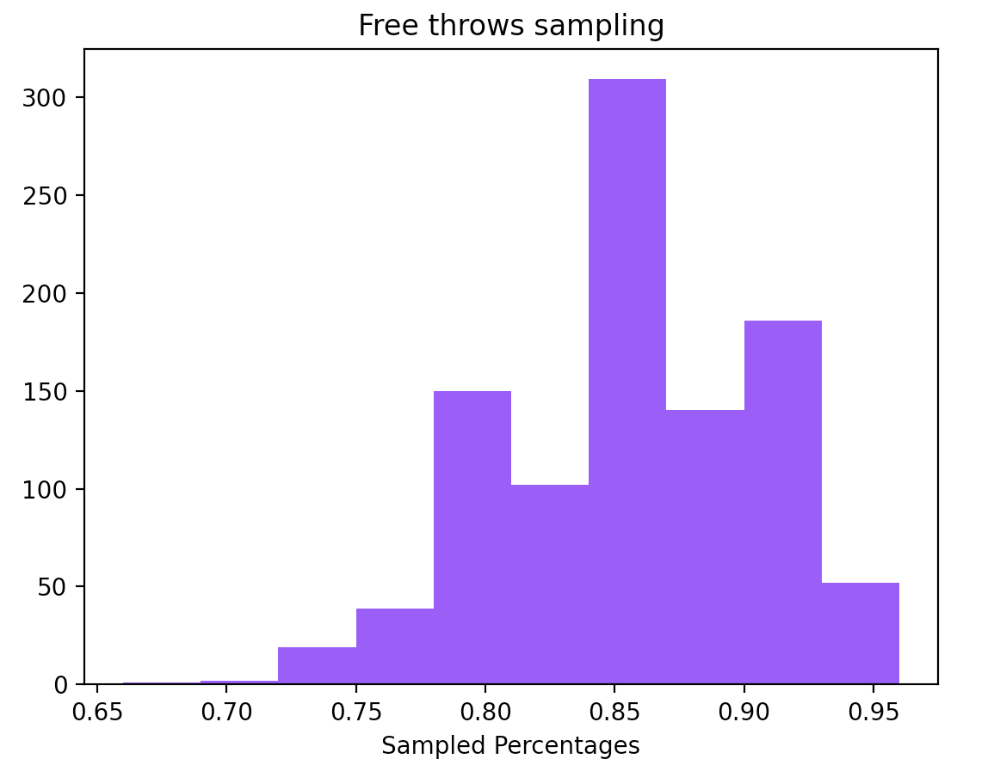

Hypothesis Testing (Draft)
Hypothesis or statistical testing is a really useful method in statistics that allows us to investigate and measure the validity of our assumptions.
Let’s assume that a basketball player claims that his free throw percentage is \(85\%\) and that’s why we challenged him to prove it. After 50 free throws he ended up scoring 38 of them leading to a percentage of \(76\%\). Can we safely assume that this person is lying and that his actual ratio is lower than \(85\%\)?
One way to test something like that is to use a computer to run a simulation several times and see how many times we actually had a percentage less or equal than \(76\%\). Indeed we tested it by running 1000 times a binomial distribution with \(p=0.85\) and it seems that only 22 out of 1000 trials such a thing happened. A \(2.2\%\) seems to be really small and maybe that is an indicator that in fact this person lies.
We could also compute the confidence interval for such an experiment is \((0.751\%, 0.949\%)\) which is quite large interval, but it seems that 75% is already out of the confidence interval.

Statisticians have streamlined this process by introducing what is called Statistical Hypothesis Testing.
In this context the first step is to make a hypothesis of exactly the opposite of what we are trying to prove. This is called the Null Hypothesis denoted by \(H_0\) and an Alternative Hypothesis denoted by \(H_1\). e.g. in the above case the null hypothesis would be that We assume that normal free throw ratio is \(\mu = \mu_0 = 85\%\) and the alternative hypothesis is that the normal free throw ratio is \(\mu < 85\%\).
The second step is to calculate a test-function. Where we compute an unbiased sampled mean \(\bar{\mu}\) and we compute the statistical function: \[ z = \frac{\bar{\mu} - \mu_0}{s_{\bar{\mu}}} \]
The \(z\) function is a regularized value. If the Null Hypothesis was true, then \(z\) follows the standard normal distribution. The further \(z\) is from 0 then the higher unlikely is that the null hypothesis is not true.
That’s where the third step comes into play where we have to compute the P-value. P-value is the probability that this test function has such a value considering what we were able to sample.
The fourth step is to decide if we are going to reject the null hypothesis based on the \(P-value\) we calculated.
- \(P-value < \alpha\): We reject the null hypothesis
- \(P-value \geq \alpha\): We fail reject the null hypothesis
where \(\alpha\) is the significance level of the test.
Places met
- Linear regression: P-value indicating whether a predictor is relevant or not with the target variable
- AB-test: Compare the means between two different populations
Well known tests
- T-test
- Independent Samples T-Test: Used when comparing the means of two independent groups. For example, you might use it to compare the test scores of two different classes.
- Paired Samples T-Test: Used when comparing the means of related groups, often before and after some intervention. For instance, you could use it to compare the weights of individuals before and after a weight loss program.
- One-Sample T-Test: Used to determine if the mean of a single sample differs significantly from a known or hypothesized population mean
- Chi-Square Test: Used to assess the association between categorical variables. It’s often used for comparing observed and expected frequencies in a contingency table.
- ANOVA (Analysis of Variance): Used to compare means among more than two groups. It tells you whether there are statistically significant differences between the means of multiple groups.